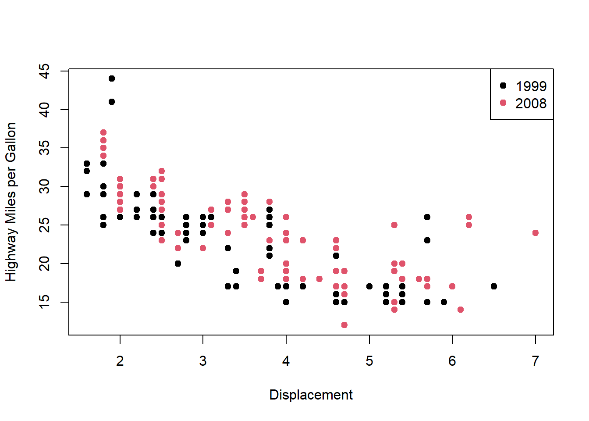
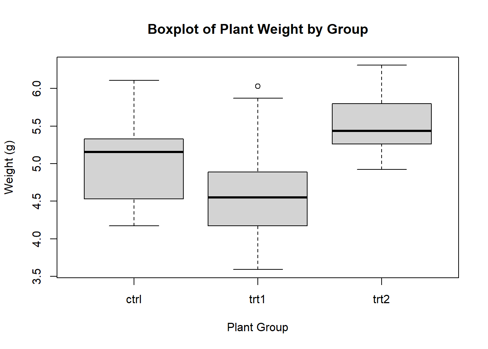
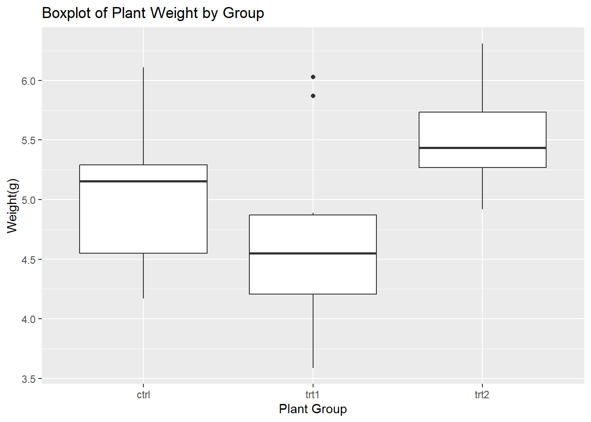

data(mpg)
# Scatter plot with base R
plot(mpg$disp1, mpg$hwy, col = as.factor(mpg$Year),
xlab = "Displacement", ylab = "Highway Miles per Gallon", pch = 19)
legend("topright", legend = unique(mpg$Year), col = unique(as.factor(mpg$Year)), pch = 19)
# Use base R to filter the data where cyl equals 8
subset(mpg, cy1 = '8')Problem Set Questions
Setup
Question 1
- Edit the following code so that the plot accurately reflects the axis labels and the subset functions returns an object with only the contents intended (as shown in the preceding comment to the function). Using indexing and regular expression tools in base R, extend the code to calculate the proportions of manual and automatic shift cars in the study
Corrected:
library(ggplot2) # ggplot2 package loaded
data('mpg')
# Scatter plot with base R
plot(mpg$displ, mpg$hwy, col = as.factor(mpg$year),
xlab = "Displacement", ylab = "Highway Miles per Gallon", pch = 19) # disp1 corrected to displ
legend("topright", legend = unique(mpg$year), col = unique(as.factor(mpg$year)), pch = 19)
#disp1 corrected to displ
#Year corrected to year (lower case y needed)
# Use base R to filter the data where cyl equals 8
subset(mpg, cyl == 8)# A tibble: 70 × 11
manufacturer model displ year cyl trans drv cty hwy fl class
<chr> <chr> <dbl> <int> <int> <chr> <chr> <int> <int> <chr> <chr>
1 audi a6 quattro 4.2 2008 8 auto… 4 16 23 p mids…
2 chevrolet c1500 sub… 5.3 2008 8 auto… r 14 20 r suv
3 chevrolet c1500 sub… 5.3 2008 8 auto… r 11 15 e suv
4 chevrolet c1500 sub… 5.3 2008 8 auto… r 14 20 r suv
5 chevrolet c1500 sub… 5.7 1999 8 auto… r 13 17 r suv
6 chevrolet c1500 sub… 6 2008 8 auto… r 12 17 r suv
7 chevrolet corvette 5.7 1999 8 manu… r 16 26 p 2sea…
8 chevrolet corvette 5.7 1999 8 auto… r 15 23 p 2sea…
9 chevrolet corvette 6.2 2008 8 manu… r 16 26 p 2sea…
10 chevrolet corvette 6.2 2008 8 auto… r 15 25 p 2sea…
# ℹ 60 more rows# cy1 corrected to cyl
# = corrected to ==Question 2
- Write pseudocode steps for calculating the volume of a cylinder (hint, if you do not know it by heart, you may need to research the equation for the volume of a cylinder!). For a cylinder of height = 3.2 cm and end radius of 5.5 cm, report the volume in cm to 2 decimal points of accuracy. Use at least 3 decimal points of accuracy for pi (hint, the quantity named pi is a standard variable in R!)
# Overall task: calculate the volume of a cylinder with height 3.2 cm and radius 5.5 cm, to 2 decimal places.
# Step 1: Calculate the area of an end circle using the formula pi * r^2
# Step 2: Multiply the circle area by the height of the cylinder.
# Step 1:
pi * 5.5^2[1] 95.03318circle_area <- pi * 5.5^2
# Step 2:
cylinder_volume <- circle_area * 3.2
round(cylinder_volume, 2)[1] 304.11# Answer is 304.11 cmQuestion 3
- In your own words, what value is required for the
dargument in thepwr.t.test()function in the{pwr}package? Show the code involved including any appropriate comment code required to answer this question. (hint: you will probably need to install the package, load it, and use help() on the function name)
library(pwr)
help(pwr.t.test)starting httpd help server ... done# Using the help() function displays the following information about the pwr.t.test() function's usage:
# pwr.t.test(n = NULL, d = NULL, sig.level = 0.05, power = NULL,
# type = c("two.sample", "one.sample", "paired"),
# alternative = c("two.sided", "less", "greater"))
help(pwr.t.test)
# Under the list of arguments in the help window, d is defined as:
# Effect size (Cohen's d) - difference between the means divided by the pooled standard deviation
# Therefore, the means of the data should be calculated and subtracted from each other. This finds the difference in mean. The standard deviation of this difference should then be calculated. This will give you the value of the effect size, which is 'd'.Question 4
- Using the code chunk below, please answer the following questions:
What is the role of the
set.seed()function in the context of this code?Why does calculating the mean of the copied original matrix return a numeric value while the mean of the same matrix when missing values are filled from the list returns
NA?Please fix the code such that
mean_of_original_copyandmean_matrixare equal
# Step 1: Create a 3x3 matrix with random numbers, and introduce NAs
set.seed(123)
matrix_with_na <- matrix(sample(c(NA, 1:9), 9, replace = TRUE), nrow = 3)
copy_of_original<-matrix_with_na
matrix_with_na[1,2] <- NA # Introduce 3 specific NAs
matrix_with_na[2,3] <- NA
matrix_with_na[3,1] <- NA
print("Original Matrix with NAs:")
print(matrix_with_na)
# Step 2: Create a list with the same structure but no NAs
list_with_values <- as.list(as.character(matrix(1:9, nrow = 3)))
print(list_with_values)
# Step 3: Use a for-loop to find the corresponding missing number from the list and fill the matrix
for (i in 1:3) {
for (j in 1:3) {
if (is.na(matrix_with_na[i,j])) {
matrix_with_na[i,j] <- list_with_values[[(i-1)*3 + j]] # Replace with corresponding value from list
}
}
}
print(matrix_with_na)
# Step 4: Try calculating the mean of the matrices
mean_matrix <- mean(matrix_with_na)
mean_of_original_copy <- mean(copy_of_original)
print(mean_of_original_copy)
print(mean_matrix)Corrected:
# 4.1 set.seed allows the results to be reproducible.
# 4.2 The copied original matrix, is a matrix which holds numerical data. This means that the mean can be calculated.
# The mean of the same matrix after values have been filled in from the list, returns NA because it does not contain numerical data.
# The line where the list is created contains the function as.character. This means that the data in the list are all characters.
# The square brackets [] are used to index, but this can also change data type. The data type of the matrix is changed.
# 4.3
# Step 1: Create a 3x3 matrix with random numbers, and introduce NAs
set.seed(123)
matrix_with_na <- matrix(sample(c(NA, 1:9), 9, replace = TRUE), nrow = 3)
copy_of_original<-matrix_with_na
matrix_with_na[1,2] <- NA # Introduce 3 specific NAs
matrix_with_na[2,3] <- NA
matrix_with_na[3,1] <- NA
print("Original Matrix with NAs:")[1] "Original Matrix with NAs:"print(matrix_with_na) [,1] [,2] [,3]
[1,] 2 NA 3
[2,] 2 5 NA
[3,] NA 4 8# Step 2: Create a list with the same structure but no NAs
list_with_values <- as.list(as.numeric(matrix(1:9, nrow = 3)))
print(list_with_values)[[1]]
[1] 1
[[2]]
[1] 2
[[3]]
[1] 3
[[4]]
[1] 4
[[5]]
[1] 5
[[6]]
[1] 6
[[7]]
[1] 7
[[8]]
[1] 8
[[9]]
[1] 9# Step 3: Use a for-loop to find the corresponding missing number from the list and fill the matrix
for (i in 1:3) {
for (j in 1:3) {
if (is.na(matrix_with_na[i,j])) {
matrix_with_na[i,j] <- list_with_values[[(i-1)*3 + j]] # Replace with corresponding value from list
}
}
}
print(matrix_with_na) [,1] [,2] [,3]
[1,] 2 2 3
[2,] 2 5 6
[3,] 7 4 8# Step 4: Try calculating the mean of the matrices
mean_matrix <- mean(matrix_with_na)
mean_of_original_copy <- mean(copy_of_original)
print(mean_of_original_copy)[1] 4.333333print(mean_matrix)[1] 4.333333Question 5
- Explain why this function is not working and return the working equivalent. Interpret what the estimate means and rank the species
# Load necessary package
install.packages('emmeans')
library(emmeans)
run_anova_posthoc <- function() {
# Perform ANOVA on the iris dataset
anova_result <- aov(Sepal.Length ~ Species, data = iris)
# Perform post-hoc test using emmeans
posthoc_result <- emmeans(anova_result, pairwise ~ Species)
comparisons <- as.data.frame(posthoc_result$contrasts)
print(comparisons)
comparisons_df <- data.frame(Species = comparisons$species,
estimate = comparisons$estimate,
p.value = comparisons$p.value)
return(comparisons_df)
}
run_anova_posthoc()Corrected:
# Load necessary package
# The original code did not work for the following reasons:
# 1 In the original code,
# install.packages('emmeans')
library(emmeans)Welcome to emmeans.
Caution: You lose important information if you filter this package's results.
See '? untidy'data(iris)
iris Sepal.Length Sepal.Width Petal.Length Petal.Width Species
1 5.1 3.5 1.4 0.2 setosa
2 4.9 3.0 1.4 0.2 setosa
3 4.7 3.2 1.3 0.2 setosa
4 4.6 3.1 1.5 0.2 setosa
5 5.0 3.6 1.4 0.2 setosa
6 5.4 3.9 1.7 0.4 setosa
7 4.6 3.4 1.4 0.3 setosa
8 5.0 3.4 1.5 0.2 setosa
9 4.4 2.9 1.4 0.2 setosa
10 4.9 3.1 1.5 0.1 setosa
11 5.4 3.7 1.5 0.2 setosa
12 4.8 3.4 1.6 0.2 setosa
13 4.8 3.0 1.4 0.1 setosa
14 4.3 3.0 1.1 0.1 setosa
15 5.8 4.0 1.2 0.2 setosa
16 5.7 4.4 1.5 0.4 setosa
17 5.4 3.9 1.3 0.4 setosa
18 5.1 3.5 1.4 0.3 setosa
19 5.7 3.8 1.7 0.3 setosa
20 5.1 3.8 1.5 0.3 setosa
21 5.4 3.4 1.7 0.2 setosa
22 5.1 3.7 1.5 0.4 setosa
23 4.6 3.6 1.0 0.2 setosa
24 5.1 3.3 1.7 0.5 setosa
25 4.8 3.4 1.9 0.2 setosa
26 5.0 3.0 1.6 0.2 setosa
27 5.0 3.4 1.6 0.4 setosa
28 5.2 3.5 1.5 0.2 setosa
29 5.2 3.4 1.4 0.2 setosa
30 4.7 3.2 1.6 0.2 setosa
31 4.8 3.1 1.6 0.2 setosa
32 5.4 3.4 1.5 0.4 setosa
33 5.2 4.1 1.5 0.1 setosa
34 5.5 4.2 1.4 0.2 setosa
35 4.9 3.1 1.5 0.2 setosa
36 5.0 3.2 1.2 0.2 setosa
37 5.5 3.5 1.3 0.2 setosa
38 4.9 3.6 1.4 0.1 setosa
39 4.4 3.0 1.3 0.2 setosa
40 5.1 3.4 1.5 0.2 setosa
41 5.0 3.5 1.3 0.3 setosa
42 4.5 2.3 1.3 0.3 setosa
43 4.4 3.2 1.3 0.2 setosa
44 5.0 3.5 1.6 0.6 setosa
45 5.1 3.8 1.9 0.4 setosa
46 4.8 3.0 1.4 0.3 setosa
47 5.1 3.8 1.6 0.2 setosa
48 4.6 3.2 1.4 0.2 setosa
49 5.3 3.7 1.5 0.2 setosa
50 5.0 3.3 1.4 0.2 setosa
51 7.0 3.2 4.7 1.4 versicolor
52 6.4 3.2 4.5 1.5 versicolor
53 6.9 3.1 4.9 1.5 versicolor
54 5.5 2.3 4.0 1.3 versicolor
55 6.5 2.8 4.6 1.5 versicolor
56 5.7 2.8 4.5 1.3 versicolor
57 6.3 3.3 4.7 1.6 versicolor
58 4.9 2.4 3.3 1.0 versicolor
59 6.6 2.9 4.6 1.3 versicolor
60 5.2 2.7 3.9 1.4 versicolor
61 5.0 2.0 3.5 1.0 versicolor
62 5.9 3.0 4.2 1.5 versicolor
63 6.0 2.2 4.0 1.0 versicolor
64 6.1 2.9 4.7 1.4 versicolor
65 5.6 2.9 3.6 1.3 versicolor
66 6.7 3.1 4.4 1.4 versicolor
67 5.6 3.0 4.5 1.5 versicolor
68 5.8 2.7 4.1 1.0 versicolor
69 6.2 2.2 4.5 1.5 versicolor
70 5.6 2.5 3.9 1.1 versicolor
71 5.9 3.2 4.8 1.8 versicolor
72 6.1 2.8 4.0 1.3 versicolor
73 6.3 2.5 4.9 1.5 versicolor
74 6.1 2.8 4.7 1.2 versicolor
75 6.4 2.9 4.3 1.3 versicolor
76 6.6 3.0 4.4 1.4 versicolor
77 6.8 2.8 4.8 1.4 versicolor
78 6.7 3.0 5.0 1.7 versicolor
79 6.0 2.9 4.5 1.5 versicolor
80 5.7 2.6 3.5 1.0 versicolor
81 5.5 2.4 3.8 1.1 versicolor
82 5.5 2.4 3.7 1.0 versicolor
83 5.8 2.7 3.9 1.2 versicolor
84 6.0 2.7 5.1 1.6 versicolor
85 5.4 3.0 4.5 1.5 versicolor
86 6.0 3.4 4.5 1.6 versicolor
87 6.7 3.1 4.7 1.5 versicolor
88 6.3 2.3 4.4 1.3 versicolor
89 5.6 3.0 4.1 1.3 versicolor
90 5.5 2.5 4.0 1.3 versicolor
91 5.5 2.6 4.4 1.2 versicolor
92 6.1 3.0 4.6 1.4 versicolor
93 5.8 2.6 4.0 1.2 versicolor
94 5.0 2.3 3.3 1.0 versicolor
95 5.6 2.7 4.2 1.3 versicolor
96 5.7 3.0 4.2 1.2 versicolor
97 5.7 2.9 4.2 1.3 versicolor
98 6.2 2.9 4.3 1.3 versicolor
99 5.1 2.5 3.0 1.1 versicolor
100 5.7 2.8 4.1 1.3 versicolor
101 6.3 3.3 6.0 2.5 virginica
102 5.8 2.7 5.1 1.9 virginica
103 7.1 3.0 5.9 2.1 virginica
104 6.3 2.9 5.6 1.8 virginica
105 6.5 3.0 5.8 2.2 virginica
106 7.6 3.0 6.6 2.1 virginica
107 4.9 2.5 4.5 1.7 virginica
108 7.3 2.9 6.3 1.8 virginica
109 6.7 2.5 5.8 1.8 virginica
110 7.2 3.6 6.1 2.5 virginica
111 6.5 3.2 5.1 2.0 virginica
112 6.4 2.7 5.3 1.9 virginica
113 6.8 3.0 5.5 2.1 virginica
114 5.7 2.5 5.0 2.0 virginica
115 5.8 2.8 5.1 2.4 virginica
116 6.4 3.2 5.3 2.3 virginica
117 6.5 3.0 5.5 1.8 virginica
118 7.7 3.8 6.7 2.2 virginica
119 7.7 2.6 6.9 2.3 virginica
120 6.0 2.2 5.0 1.5 virginica
121 6.9 3.2 5.7 2.3 virginica
122 5.6 2.8 4.9 2.0 virginica
123 7.7 2.8 6.7 2.0 virginica
124 6.3 2.7 4.9 1.8 virginica
125 6.7 3.3 5.7 2.1 virginica
126 7.2 3.2 6.0 1.8 virginica
127 6.2 2.8 4.8 1.8 virginica
128 6.1 3.0 4.9 1.8 virginica
129 6.4 2.8 5.6 2.1 virginica
130 7.2 3.0 5.8 1.6 virginica
131 7.4 2.8 6.1 1.9 virginica
132 7.9 3.8 6.4 2.0 virginica
133 6.4 2.8 5.6 2.2 virginica
134 6.3 2.8 5.1 1.5 virginica
135 6.1 2.6 5.6 1.4 virginica
136 7.7 3.0 6.1 2.3 virginica
137 6.3 3.4 5.6 2.4 virginica
138 6.4 3.1 5.5 1.8 virginica
139 6.0 3.0 4.8 1.8 virginica
140 6.9 3.1 5.4 2.1 virginica
141 6.7 3.1 5.6 2.4 virginica
142 6.9 3.1 5.1 2.3 virginica
143 5.8 2.7 5.1 1.9 virginica
144 6.8 3.2 5.9 2.3 virginica
145 6.7 3.3 5.7 2.5 virginica
146 6.7 3.0 5.2 2.3 virginica
147 6.3 2.5 5.0 1.9 virginica
148 6.5 3.0 5.2 2.0 virginica
149 6.2 3.4 5.4 2.3 virginica
150 5.9 3.0 5.1 1.8 virginicarun_anova_posthoc <- function() {
# Perform ANOVA on the iris dataset
anova_result <- aov(Sepal.Length ~ Species, data = iris)
# Perform post-hoc test using emmeans
posthoc_result <- emmeans(anova_result, pairwise ~ Species)
comparisons <- as.data.frame(posthoc_result$contrasts)
print(comparisons)
comparisons_df <- data.frame(contrast = comparisons$contrast,
estimate = comparisons$estimate,
p.value = comparisons$p.value)
return(comparisons_df)
}
run_anova_posthoc() contrast estimate SE df t.ratio p.value
setosa - versicolor -0.930 0.1029579 147 -9.033 <.0001
setosa - virginica -1.582 0.1029579 147 -15.366 <.0001
versicolor - virginica -0.652 0.1029579 147 -6.333 <.0001
P value adjustment: tukey method for comparing a family of 3 estimates contrast estimate p.value
1 setosa - versicolor -0.930 3.386180e-14
2 setosa - virginica -1.582 2.997602e-15
3 versicolor - virginica -0.652 8.287558e-09aov_posthoc <- run_anova_posthoc() contrast estimate SE df t.ratio p.value
setosa - versicolor -0.930 0.1029579 147 -9.033 <.0001
setosa - virginica -1.582 0.1029579 147 -15.366 <.0001
versicolor - virginica -0.652 0.1029579 147 -6.333 <.0001
P value adjustment: tukey method for comparing a family of 3 estimates print(aov_posthoc) contrast estimate p.value
1 setosa - versicolor -0.930 3.386180e-14
2 setosa - virginica -1.582 2.997602e-15
3 versicolor - virginica -0.652 8.287558e-09# The estimate is the difference in the means betwen 2 groups. For example:
# The first row in the aov_posthoc table reads:
# contrast estimate p.value
# 1 setosa - versicolor -0.930 3.386180e-14
# Here, the estimate is the mean difference between the setosa and versicolor.
# Because the value is negative, the mean sepal length of setosa is smaller than the mean sepal length of versicolor.
# Setosa is smaller than versicolor, and virginica. Versicolor is smaller than virginica.
# Therefore the ranking of the species from largest sepal length to smallest is:
# 1. Virgiica
# 2. Versicolor
# 3. SetosaQuestion 6
- Using the iris dataset in R, conduct an anova of sepal length ‘by hand’ and report the F statistic. Feel free to use other packages for data wrangling/grouping only, but for each function used, appropriately comment on what it does and which package it comes from. Show your R code.
data(iris) # Load data
library(dplyr)
Attaching package: 'dplyr'The following objects are masked from 'package:stats':
filter, lagThe following objects are masked from 'package:base':
intersect, setdiff, setequal, unionsetosa <- filter(iris, Species == 'setosa')
versicolor <- filter(iris, Species == 'versicolor')
virginica <- filter(iris, Species == 'virginica')
# The filter function is from the dplyr package. Used here to separate the data by species.
species_data <- data.frame(setosa$Sepal.Length, versicolor$Sepal.Length, virginica$Sepal.Length)
# Determine the number of groups and the number of observations per group
k <- ncol(species_data) # the number of groups
n_per_group <- vector(mode = 'integer', length = ncol(species_data))
for(i in 1:k) {
n_per_group[i] <- length(species_data[, i])
} # the for loop goes through each group, counting the number of observations.
# Determine the number of individual observations
n_total <- ncol(species_data) * nrow(species_data)
# Determine degrees of freedom
df_between <- k - 1 # Degrees of freedom between the groups
df_within <- n_total - k # Degrees of freedom within each group
# Means
grand_mean <- mean(as.matrix(species_data)) # the total mean of all of the data in species_data
mean_per_group <- colMeans(species_data) # the mean for each group
# Calculate sum of Squares between
ss_between <- sum(n_per_group * (mean_per_group - grand_mean)^2)
# Print sum of squares between
ss_between[1] 63.21213# Calculate sum of squares within
ss_within <- sum(sum((species_data[, 1] - mean_per_group[1])^2),
sum((species_data[, 2] - mean_per_group[2])^2),
sum((species_data[, 3] - mean_per_group[3])^2)
)
# Print sum of squares within
ss_within[1] 38.9562# Calculate mean square between
msq_between <- ss_between / df_between
msq_between # print answer[1] 31.60607# Calculate mean square within
msq_within <- ss_within / df_within
msq_within # print answer[1] 0.2650082# Find F Value
f_value <- msq_between / msq_within
# Print F Value
f_value[1] 119.2645# The f value is 119.2645.
f_value <- round(f_value, 1) # round to one decimal place
# Print f value
print(f_value) # 119.3[1] 119.3# Check the answer by comparing to the aov() function
iris_aov <- aov(Sepal.Length ~ Species, data = iris)
summary(iris_aov) Df Sum Sq Mean Sq F value Pr(>F)
Species 2 63.21 31.606 119.3 <2e-16 ***
Residuals 147 38.96 0.265
---
Signif. codes: 0 '***' 0.001 '**' 0.01 '*' 0.05 '.' 0.1 ' ' 1# The f value is the 119.3, which is the same as the f value I achieved by hand.Question 7
- Using the Plant Growth data, create a boxplot (with appropriate axis titles) showing the weights of the plants in all groups. Then using ggplot2, create the same boxplot. When are boxplots useful in data analysis?
data('PlantGrowth')
print(PlantGrowth) weight group
1 4.17 ctrl
2 5.58 ctrl
3 5.18 ctrl
4 6.11 ctrl
5 4.50 ctrl
6 4.61 ctrl
7 5.17 ctrl
8 4.53 ctrl
9 5.33 ctrl
10 5.14 ctrl
11 4.81 trt1
12 4.17 trt1
13 4.41 trt1
14 3.59 trt1
15 5.87 trt1
16 3.83 trt1
17 6.03 trt1
18 4.89 trt1
19 4.32 trt1
20 4.69 trt1
21 6.31 trt2
22 5.12 trt2
23 5.54 trt2
24 5.50 trt2
25 5.37 trt2
26 5.29 trt2
27 4.92 trt2
28 6.15 trt2
29 5.80 trt2
30 5.26 trt2boxplot(weight ~ group, # Create a boxplot of weight, for each group
data = PlantGrowth, # Select data
main = 'Boxplot of Plant Weight by Group', # Main title for plot
xlab = 'Plant Group', # x-axis title
ylab = 'Weight (g)') # y-axis title
library(ggplot2)
ggplot(data = PlantGrowth, aes(x = group, y = weight)) +
geom_boxplot() +
labs(title = 'Boxplot of Plant Weight by Group', x = 'Plant Group', y = 'Weight(g)')
# Boxplots are useful in displaying results, specifically for when there are multiple groups. They are often used in addition to ANOVAS because they show the variation in all the groups.Question 8
Fix the code so that it correctly indexes the deepest nested list and returns the 4th number in that list. Then add another list of single digit even numbers within the original list. Index to find the 4th item.
my_list <- list(list(1, 2:3, c(1, 3, 5, 7, 9)), 2)
my_list[[1]][[2]][4]Corrected:
my_list_2 <- list(list(1, 2:3, list(1, 3, 5, 7, 9)), 2) # c() was used instead of list(). Using list() created the nested list, rather than a vector as an item.
my_list_2[[1]][[3]][4] # The second item was being indexed, which did not contain the third list. Therefore, it was not working.[[1]]
[1] 7# Indexed value is 7.
my_list_3 <- list(list(1, 2:3, list(1, 3, 5, 7, 9), list(2, 4, 6, 8)), 2) # Added another list of even numbers.
str(my_list_3)List of 2
$ :List of 4
..$ : num 1
..$ : int [1:2] 2 3
..$ :List of 5
.. ..$ : num 1
.. ..$ : num 3
.. ..$ : num 5
.. ..$ : num 7
.. ..$ : num 9
..$ :List of 4
.. ..$ : num 2
.. ..$ : num 4
.. ..$ : num 6
.. ..$ : num 8
$ : num 2my_list_3[[1]][[4]][4] # Indexed to find the correct number.[[1]]
[1] 8# Indexed value is 8.